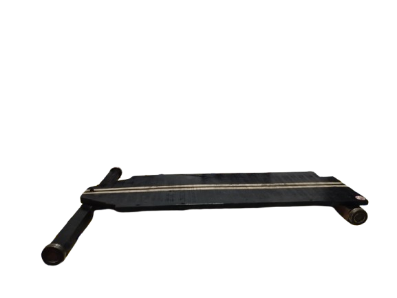
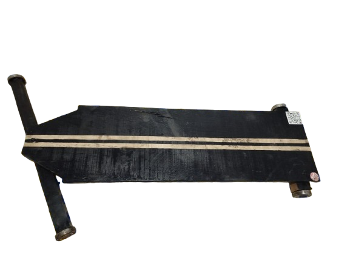
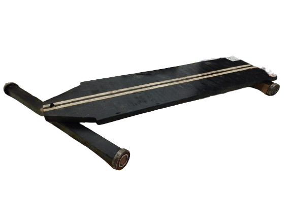

definição
Um carrinho de rolimã, ou também conhecido como carrinho de lomba, é um brinquedo tradicional, especialmente popular no Brasil, utilizado para descer ladeiras. Consiste em um carrinho, geralmente de madeira, com rolamentos (rolimãs) nas rodas, que facilita o movimento e a velocidade na descida.
Clique aqui para baixar o pdfGaleria
  